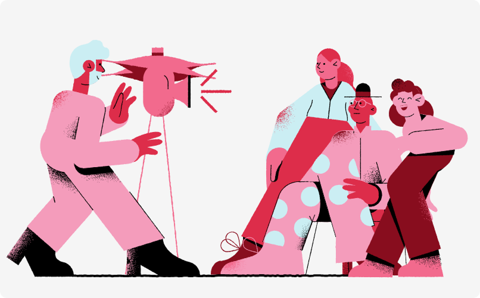

Vivian Notrispe.
Transformando problemas complexos em produtos simples.
Criando experiências intuitivas para decisões mais claras.
Trabalhos selecionados

Visibilidade de Pedidos: destravando a instalação
Como identifiquei que a falta de visibilidade sobre pedidos e agendamento de instalação sobrecarregava o atendimento, e desenhei uma linha do tempo que traduz o status interno da operação para o cliente.
Recomendações Inteligentes: a régua determinística por trás da IA
Como construí a lógica determinística — sinais, farol de saúde e régua de criticidade — que decide o que recomendar antes de qualquer LLM entrar em cena.
Basic Value: métrica de ativação para reduzir churn
Como identifiquei que a maior parte do churn vinha de clientes que nunca ativaram a plataforma, e criei uma métrica que virou meta estratégica entre CS, Supply e Produto.
Acompanhe bastidores e atualizações sobre os projetos.
GitHub
Código e experimentos por trás dos produtos.
Contato
Vamos conversar sobre o seu próximo produto.